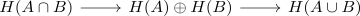
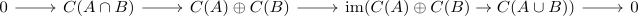
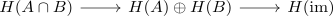
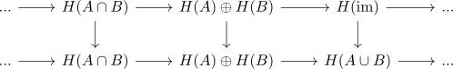

open cover as excisive triad
Proposition
Let $X$ be a topological space, $A,B \subseteq X$ open subsets. Then $(X,A,B)$ is an excisive triad
Proof
follows from the excision theorem for an open cover:
w.l.o.g. we may assume $X = A \cup B$. Then we get the long exact mayer vietoris sequence

furhtermore we have a short exact sequence

and hence the long exact sequence

(cf. zig-zag lemma)
As the maps are induced by the inculsions, we get the diagram

Thus the morphism
\begin{align*}
\mathrm{im} \rightarrow C(A \cup B)
\end{align*}
is a quasi-isomorphism 5-Lemma for quasi isomorphisms
As $\mathrm{im}(), C(A \cup B)$ are chain complex of projectives, the quasi iso is also a chain homotopy equivalence (cf. quasi isomorphism between chain complexes of projectives and homotopy equivalence )